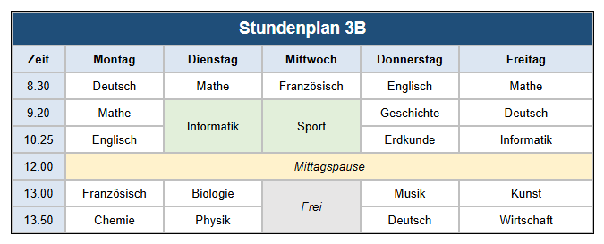

Lernpfad › Lektion 3
Zellen verbinden

Verbinden und trennen
- Verbinden: Ziehen Sie die Maus über die Zellen, die eine Zelle werden sollen, und klicken Sie auf der Registerkarte
 Tabelle (T) auf MC (Zellen verbinden).
Tabelle (T) auf MC (Zellen verbinden). - Das geht nebeneinander (über mehrere Spalten), untereinander (über mehrere Zeilen) oder beides.
- Trennen: Klicken Sie auf eine verbundene Zelle und auf UMC (Zellen trennen).
So machen Sie es selbst
- Erstellen Sie eine Tabelle mit 6 Spalten und 8 Zeilen (mit AC und AR).
- Titel: Ziehen Sie über die 6 Zellen der obersten Zeile, klicken Sie auf MC und geben Sie Stundenplan 3B ein. Machen Sie den Titel fett, größer und zentriert, mit einer dunklen Zellenfarbe und weißer Schrift (siehe Lektion 2).
- Tage und Uhrzeiten: Geben Sie in Zeile 2 Zeit, Montag ... Freitag ein und in die erste Spalte die Anfangszeiten.
- Eine Doppelstunde: Ziehen Sie am Dienstag über die Zellen von 9.20 und 10.25, klicken Sie auf MC und geben Sie Informatik ein. Machen Sie dasselbe für Sport am Mittwoch.
- Mittagspause: Ziehen Sie in der Zeile von 12.00 über Montag bis Freitag, klicken Sie auf MC und geben Sie Mittagspause ein.
- Tragen Sie die übrigen Fächer ein und geben Sie den Kopf- und Pausenzellen eine Farbe.
Hinter den Kulissen
Im HTML-Code (klappen Sie den Bereich unten aus) sehen Sie, wie das Verbinden funktioniert: Eine Zelle über mehrere Spalten
erhält colspan, eine Zelle über mehrere Zeilen erhält rowspan. Der Titel hat zum Beispiel
colspan="6".
Aufgabe
Am Freitagnachmittag gibt es zwei Stunden Projektarbeit statt Kunst und Wirtschaft. Passen Sie den Stundenplan an.
Lösung
Ziehen Sie am Freitag über die Zellen von 13.00 und 13.50 und klicken Sie auf MC. Der alte Text beider Zellen steht jetzt
untereinander in der neuen Zelle: Doppelklicken Sie, löschen Sie diesen Text und geben Sie Projektarbeit ein. Im HTML-Code hat
die Zelle jetzt rowspan="2".
Arbeiten Sie unter Linux? Öffnen Sie das Beispiel dann selbst mit Tabellendesigner öffnen: Ordner
lessen/de, Datei les03-lessenrooster.htd.